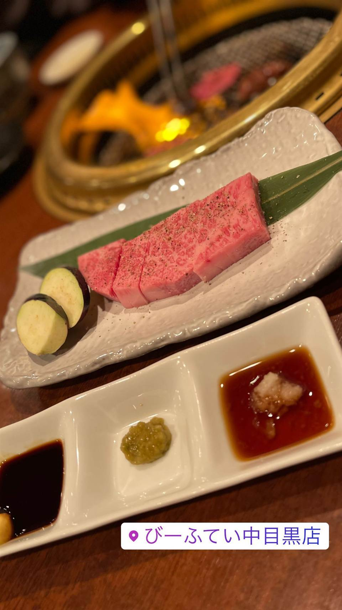
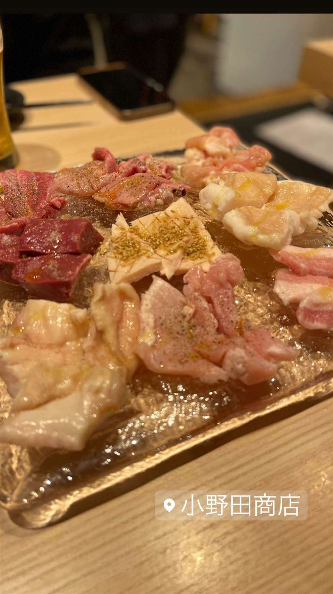
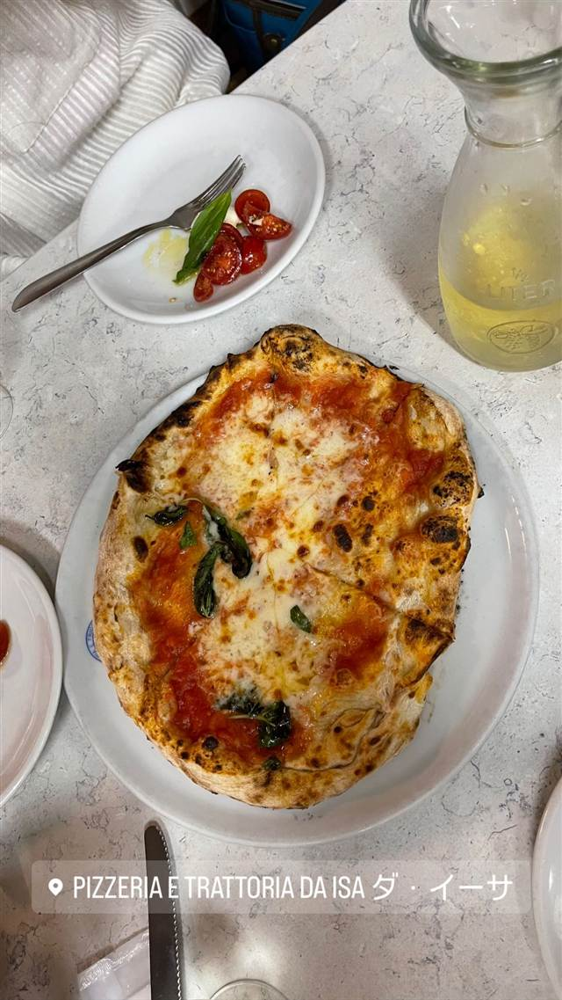
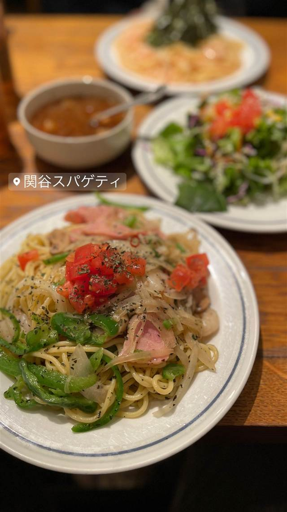
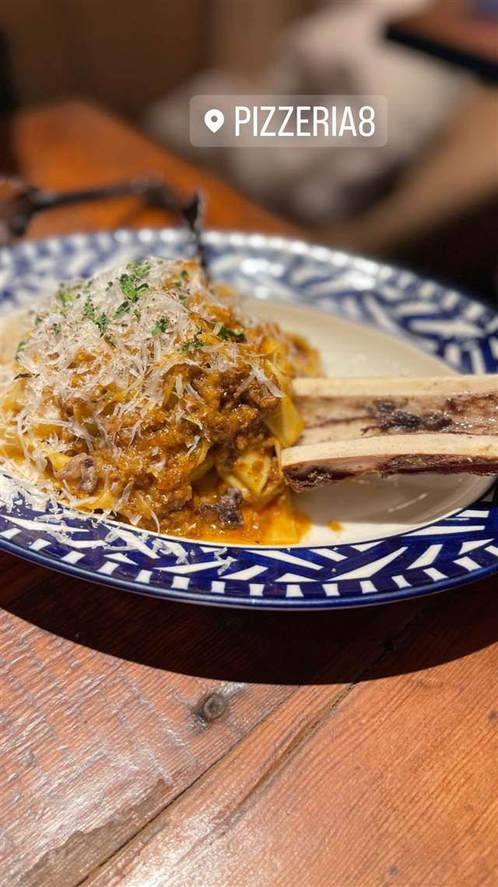

カフェ ファソン 中目黒本店（CAFÉ FAÇON）
コーヒーとの相性を考え抜いたバスクチーズケーキ
カフェファソン
元サラリーマンだった岡内賢治氏が石神井公園などのカフェで修行を積み、2008年に中目黒で立ち上げた自家焙煎コーヒー専門店。名物のバスクチーズケーキは、コーヒーとの相性を考え抜いた甘さとローストくるみの香ばしさが持ち味。
TRIVIA
豆知識
- 2014年には代官山に焙煎所併設のコーヒースタンドを出店した
- バスクチーズケーキはコーヒーとのペアリングを意識して作られている
REVIEWS
世間の評判
3.75食べログ
看板オ・レ・グラッセと濃厚チーズケーキ
- 看板メニューのオ・レ・グラッセと丁寧に淹れた珈琲を評価する声が多い
- 濃厚な味わいのバスクチーズケーキやシフォンケーキを評価する声が多い
- 休日は40分以上待つこともあり、混雑への覚悟が必要だという声が多い
- ブレンドの提供量が少なめで、酸味が強いと感じる人もいるという声がある
食べログ 口コミ1484件
| 創業 | 2008年9月29日創業 |
|---|---|
| 看板 | バスクチーズケーキ |
| こだわり | 自家焙煎コーヒーと自家製スイーツにこだわり、バスクチーズケーキはコーヒーとの相性を考えた甘さのバランスと、ローストしたくるみの香ばしさが特徴 |
| どこから | 都心 |
| 営業時間 | 月〜日 10:00-22:00 |
| 予算 | 昼 ¥1,000～¥1,999 夜 ¥1,000～¥1,999 |
| 場所 | 中目黒 東京都目黒区上目黒 |
食べたもの：チーズケーキ
NEARBY
近い店・同じ系統の店
-

★ 焼肉 中目黒駅 びーふてい 中目黒店 1988年創業、和牛一頭買いで味わう名物ガツン焼き 夜 ¥6,000～¥7,999 -

★ 焼肉 中目黒 小野田商店 中目黒の路地裏、七輪で焼く500円前後のホルモン 夜 ¥3,000～¥3,999 -
 ピザ 中目黒駅
聖林館（セイリンカン）
マルゲリータとマリナーラの2種のみ、国産小麦を長期熟成
昼 ¥4,000～¥4,999 夜 ¥4,000～¥4,999
ピザ 中目黒駅
聖林館（セイリンカン）
マルゲリータとマリナーラの2種のみ、国産小麦を長期熟成
昼 ¥4,000～¥4,999 夜 ¥4,000～¥4,999
-

ピザ 中目黒駅 ピッツエリア エ トラットリア ダ・イーサ（Pizzeria e trattoria da ISA） 世界ピッツァ選手権優勝のナポリピッツァ職人が焼くマルゲリータ 昼 ¥2,000～¥2,999 夜 ¥3,000～¥3,999 -

イタリアン 中目黒駅 関谷スパゲティ 真空圧縮で気泡を抜いた自家製極太麺のナポリタンが730円均一 昼 ～¥999 夜 ～¥999 -

パスタ 中目黒駅 中目黒 ピッツェリア8 350℃の石窯で焼く本格ナポリピッツァと自家製生パスタ 昼 ¥1,000～¥1,999 夜 ¥3,000～¥3,999
ONSEN & SAUNA